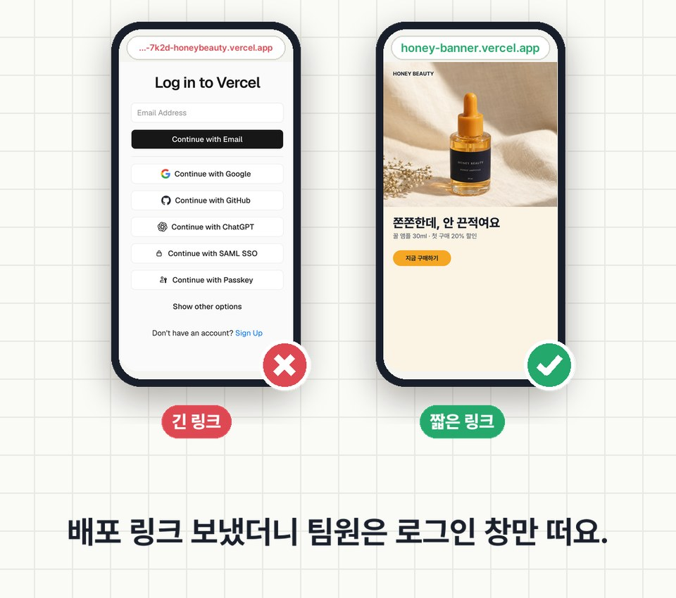
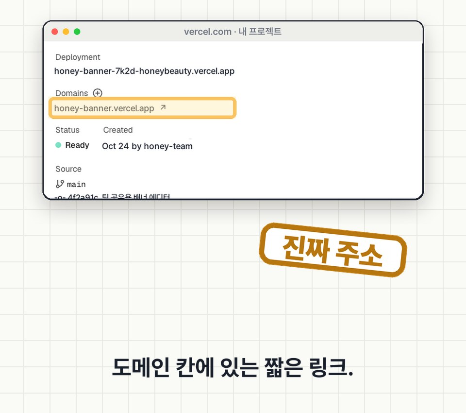

EP.15 · 팀원한테 보낼 링크
배포 링크 보냈는데,
배포 링크 보냈는데,
팀원은 로그인 창만
AI한테 "배포해 줘" 해서 받은 링크를 팀원한테 보냈더니, 팀원 화면엔 Vercel 로그인 창만 떠요. 링크가 잘못된 게 아니라 보낼 링크가 따로 있어서예요.
01링크가 세 종류예요
실제 프로젝트 하나를 로그인 안 한 브라우저로 열어 봤어요(2026-10-24). 주소 이름은 예시로 바꿨어요.
① 배포할 때마다 생기는 긴 주소 예: honey-banner-7k2d-honeybeauty.vercel.app
→ Vercel 로그인 창이 떠요. 그 배포 순간 버전에 고정돼 있어서, 고쳐도 이 주소 내용은 안 바뀌어요.
② 브랜치 주소 예: honey-banner-git-main-….vercel.app
→ 이것도 Vercel 로그인 창이 떠요.
③ Domains 칸의 짧은 주소 ✅ 예: honey-banner.vercel.app
→ 누구나 열려요. 항상 가장 최근 배포를 보여 줘요. 팀원한테는 이걸 보내요.

02짧은 링크 찾는 곳
Vercel 대시보드 → 내 프로젝트 → Overview → Domains 칸에 있는 주소예요. 위쪽 Deployment 칸의 긴 주소와 헷갈리기 쉬워요.

💡 AI한테 배포를 맡겼다면 "팀원한테 보낼 프로덕션 도메인 주소를 알려 줘"라고 한 번 더 물어보세요.
03GitHub 연결 — AI에 그대로 붙여 넣는 요청문
GitHub에 연결해 두면 고친 걸 올릴 때마다 자동으로 다시 배포되고, 짧은 링크가 알아서 최신이 돼요. 기록이 남아서 예전 버전으로 되돌리기도 쉬워요. 로그인·권한 승인은 직접 눌러야 해요.
GitHub 연결 + Vercel 자동 배포
이 툴을 팀원들이 링크 하나로 쓰게 하고 싶어. 1. 이 프로젝트를 내 GitHub 저장소(비공개)에 올려 줘. 2. 그 저장소를 Vercel 프로젝트에 연결해서, main에 올릴 때마다 자동으로 프로덕션 배포되게 해 줘. 3. 배포가 끝나면 팀원한테 보낼 '프로덕션 도메인'(짧은 주소)을 알려 줘. 배포마다 생기는 긴 주소 말고. 4. API 키 같은 비밀 값이 코드에 있으면 빼고, Vercel 환경 변수로 옮겨 줘. 5. 내가 직접 해야 하는 일(로그인, 권한 승인, 어디를 누르는지)을 순서대로 알려 줘. 코드는 몰라도 따라 할 수 있게 한 단계씩 설명해 줘.
04써 보기 전에 꼭
- '긴 링크 = 로그인 창'은 Vercel 기본 설정 기준이에요(Deployment Protection · Standard). 설정을 바꾼 프로젝트는 다르게 보일 수 있어요. 테스트할 땐 로그인 안 된 시크릿 창으로 열어 보세요.
- 짧은 링크는 주소를 아는 누구나 열 수 있어요. 우리 팀만 쓰게 하려면 툴에 로그인을 붙여요(EP.16 Supabase 참고).
- 무료(Hobby) 플랜은 개인·비상업 용도만이에요. 회사 업무에 쓰는 툴이면 Pro 플랜 대상이에요.
- API 키·비밀번호를 코드에 그대로 두면 링크를 연 사람이 볼 수 있어요. 환경 변수로 옮겨요.
05출처
- Vercel Docs — Vercel Authentication
- Vercel Changelog — More Secure Deployment Protection
- Vercel Changelog — Every push now receives a unique URL
- Vercel Docs — Hobby Plan · Fair Use Guidelines(2026-10-24 확인)
- 영상 속 화면은 실제 화면에서 이름·주소만 예시로 바꿨어요. 배너는 가상 브랜드 '허니 뷰티'예요.
실무에서 바로 쓰는 AI 활용법, 하나씩 올려요.
대행사에서 AI 교육하는 현직 마케터가 직접 써 보고 정리해요.
인스타에서 팔로우